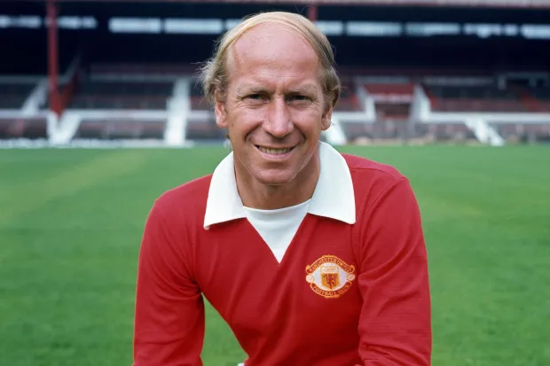

<h1>meu astro</h1>
Entre as habilidades do jovem Bobby Charlton, estava a sua notável visão cerebral de jogo: jogava como centro campista avançado recuado, concluindo
 fulminantemente as ações ofensivas que procurava buscar atrás, de onde também costumava desferir eficientes chutes de média e longa distância.[1]
Era também um verdadeiro gentleman da esportividade e do fair play[1] e um hábil driblador, inspirado no ídolo de quase todo jovem inglês apreciador do futebol
 na época, o veterano Stanley Matthews.[2]
É considerado um dos melhores jogadores da história, não só do futebol inglês, mas também mundial, deixando sua marca por todos os continentes.
Tinha o esporte no sangue por parte de mãe: três irmãos dela jogaram profissionalmente como zagueiros.[1] Seu irmão Jack seguiu o modelo da família
e foi seu companheiro na Seleção Inglesa campeã do mundo em 1966.

